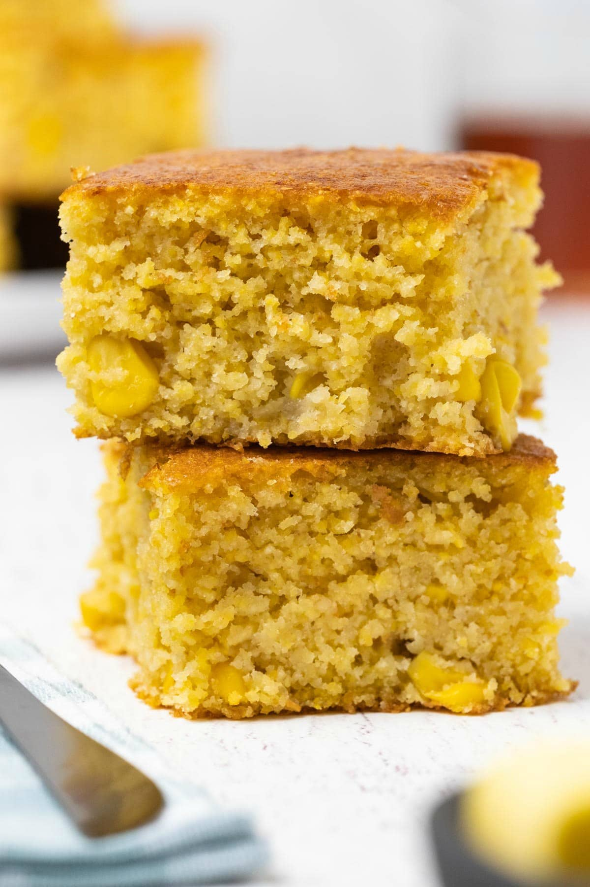

Cornbread

Descripition
This Cornbread recipe is deliciously moist with actual corn kernals.
This recipe only takes 20 minutes prep and 20 minutes cook time.
Ingredients
- 5 tablespoons unsalted butter
- 1 cup fine or medium yellow ground cornmeal
- 1 cup all-purpose flour
- 2 teaspoons baking powder
- 1/2 teaspoon baking soda
- 1/2 teaspoon fine sea salt
- 1/3 cup packed dark brown sugar
- 1 cup whole milk
- 3 tablespoons vegetable oil
- 1 large egg
- 1 can of corn
Steps
- Melt 4 tablespoons butter, set aside to cool
- Whisk together the cornmeal, flour, baking powder, baking soda, salt, and brown sugar
in a medium bowl until well combined
- In a separate bowl, whisk together milk, egg and 3 tablespoons of vegtable oil
- Pour and stir in milk mixture into dry ingredients
- Add in melted butter and stir until well combined
- Set the cornbread batter aside for 10 mins
- While waiting, preheat the oven to 400 degrees Fahrenheit
- Coat the 9 inch baking pan with the remaining butter
- Add the batter to the baking pan
- Bake for 20 to 25 mins, or until the center is firm and a toothpick inserted into
the center comes out clean
- Allow the cornbread to cool for 10 minutes before slicing and serving
Enjoy!